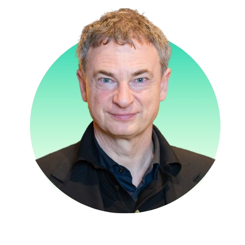
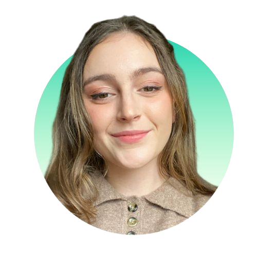
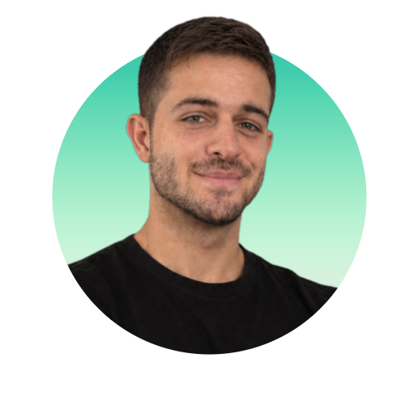
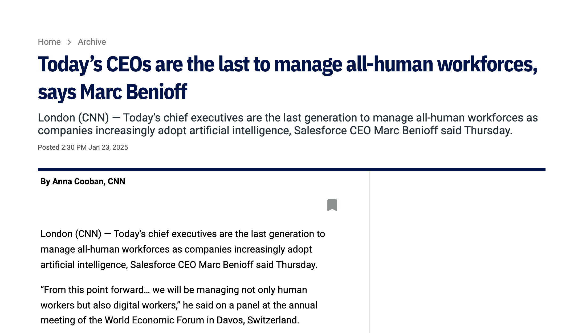

CEO of AIs
Leading the companies we have - and designing the companies we need
Stéphanie Kioutsoukis + Mark Turrell · AIBA 2026, Katowice · 22.10.2026
Our team. 2024.
9 humans. 1 AI.


Our team. Today.
4 humans. 51 AIs.

How it all began.
Exploring Space · Goddess S & MWizard · Suno
From tool to workforce
Leading the company you have.
Designing the company
you need.
Learn,Create,Lead.
Don't wait to be ready.
Get ready by using it.
You can test an idea
before you've finished
thinking it.
You can attempt things
that used to be out of reach.
- 01A visual framework
- 02An ROI calculator
- 03A self-assessment product
- 04A benchmarking system
- 05A content production system
- 06A weekly intelligence engine
- 07A proposal system
- 08A contact intelligence system
- 09An industry database
- 10This keynote
Learn,Create,Lead.
Different tasks and agents
bolted together
AI can do the task.
You still have to design the job.
(Soon even that will change and be automated.)
We couldn't be the experts in every part.
Learn,Create,Lead.
You may be the last generation
to lead humans only.

One outcome.
Many contributors.
- Set direction.
- Choose who does what.
- Design the work.
- Judge the result.
- Decide.
Orchestration.
AI makes execution cheaper.
What becomes more valuable?
- Curiosity.
- Judgement.
- Openness.
- Relationships.
- Purpose.
Responsibility.
It works.
Mostly.
Today's AIs
- Lie.
- Forget.
- Burn tokens.
…with total conviction.
Small.
Reversible.
Reviewed.
Research.
Analyse.
Draft.
Critique.
Decide.
Your first AI team.
One outcome. Specialist roles.
Workflowsequence · dependencies · handoffs
System design
Context
Rules
Decisions
Exceptions
Checks
A team becomes a system when the work is designed.
Learn,What can it do for you?Start experimenting.
Create,How do the pieces work together?Start thinking systems.
Lead.How do you lead a mixed workforce?Start thinking orchestration.